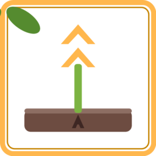
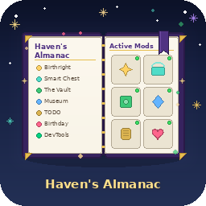
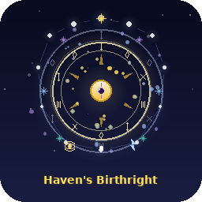
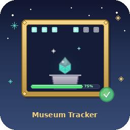
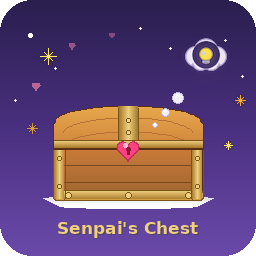
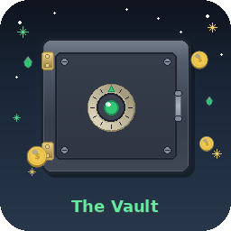

Icon refresh
The mod icons — old vs. new
All 13 mod icons, redrawn as one family: a rounded night-sky tile, scattered stars, a centered emblem per mod, and a gold name banner. Every new icon hides an “A” — the AzraelGodKing mark — somewhere in the scene. Each card's caption tells you where to look, but try spotting it first.
A Squirrel's Birthday Reminder
Birthday cake, candle glow, acorn + balloon. Hidden A: piped in frosting on the cake's front.
Crop Optimizer

Sprout with golden growth chevrons. Hidden A: stamped into the soil bed, left of the stem.
Faster Races
Lightning bolt with speed streaks. Hidden A: star constellation in the lower-right sky.
Gifting Assistant
Gift box, bow, floating heart. Hidden A: monogram on the gift tag hanging off the bow.
HavenDevTools
Terminal window with gears. Hidden A: typed at the prompt on the last terminal line.
Haven's Almanac

Open book under a constellation. Hidden A: illuminated drop cap on the left page.
Haven's Respec
Reset arrows circling a skill orb. Hidden A: sealed into the golden orb.
Haven's Birthright

Celestial rings, moons and a birth star. Hidden A: the sigil at the top of the zodiac ring.
S.M.U.T. — Museum Tracker

Framed gem, 75% progress bar, check badge. Hidden A: brass exhibit plaque on the pedestal.
Senpai's Chest

Treasure chest with a heart lock. Hidden A: branded into the lid above the lock.
The Vault

Vault door, emerald dial, floating coins. Hidden A: engraved name plate at the top of the door.
Sun Haven TODO
Checklist scroll with a quill. Hidden A: the quill's signature on the bottom scroll roll.
Trinket Fortune
Fish chasing a lucky star lure. Hidden A: star constellation inside the ring, upper-left.